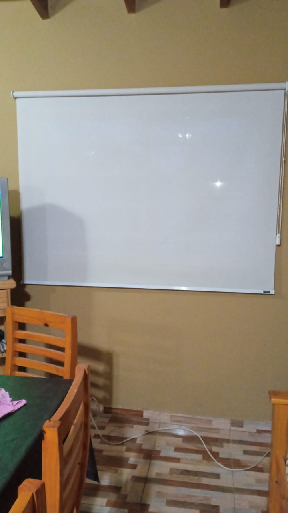
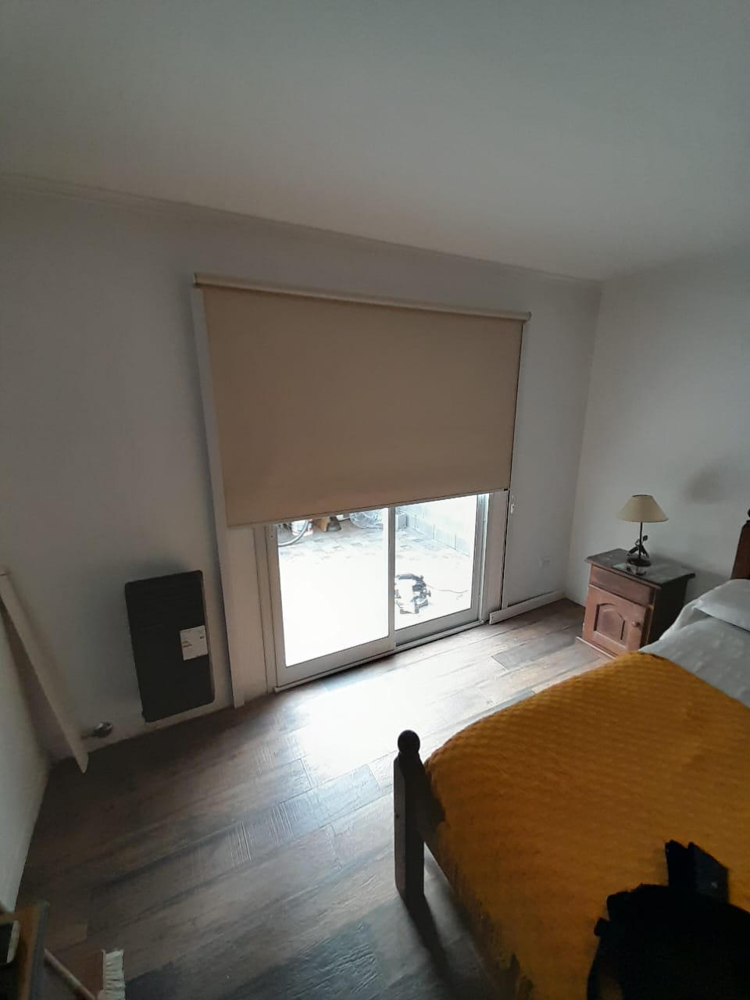

Bloquea 100% la luz Solar
Estas cortinas son ideales para bloquear la luz solar en un 100% ya que estan compuestas por 4 capaz protectores contra los rayos UV.
Ideal para ventanales
Si tenes ventanales grandes en quinchos o garajes, estas cortinas son para vos! Contamos con gran variedad de telas y colores para que puedas combinar con tu hogar.

Blackout con guias laterales.
Si te gusta dormir en la oscuridad total, esta opcion es la mas elegida ya que las guias laterales hacen que la cortina baje bien pegada a la ventana y no entre nada de luz. Es ideal para dormitorios.